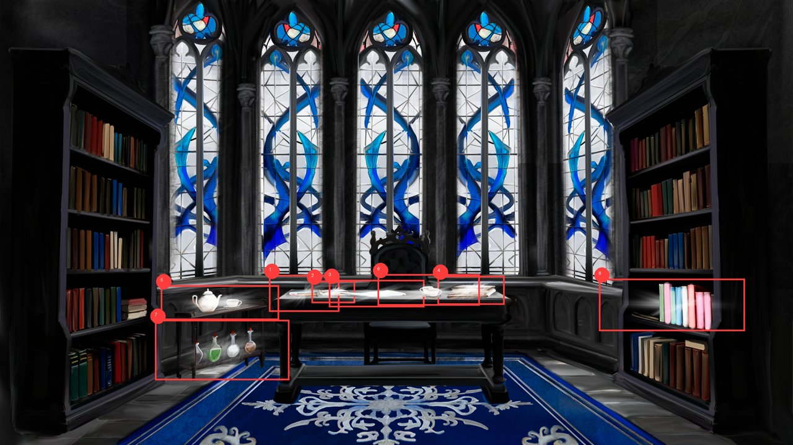
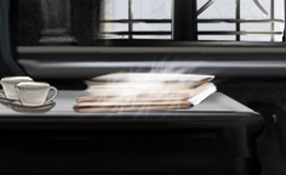
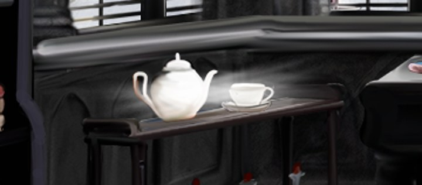
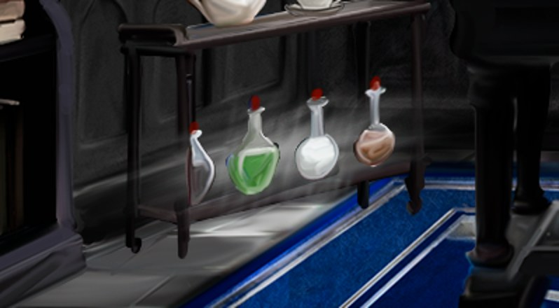

Место пробуждения
Откуда название: подпись стрелки «К месту пробуждения» (script _define.rpy:405); здесь героиня просыпается в прологе. Код: less_start
Минимум переходов от места пробуждения по стрелкам: 0 (время +0; закрытые проходы и условия не учтены, это нижняя граница по графу стрелок, не доказанный минимум для игры). Как считается время
Переходы отсюда
- направо: Перекрёсток (подпись стрелки «Перекресток») (время +1)
- налево: Сужение тропинки (подпись стрелки «Сужение тропинки») (время +1)
Сюда ведут
- Сужение тропинки (направо)
- Перекрёсток (назад (вниз))
Кликабельные объекты на этой локации
less_spal, less_osm, hand_blood, kremen, less_ter
Сцены
Перекрёсток
Откуда название: подпись стрелки «Перекресток» (script _define.rpy:325). Код: less_per
Минимум переходов от места пробуждения по стрелкам: 1 (время +1; закрытые проходы и условия не учтены, это нижняя граница по графу стрелок, не доказанный минимум для игры). Как считается время
Переходы отсюда
- налево: Дорога в Айрат (подпись стрелки «Налево! В Айрат») (время +1)
- вперёд (вверх): Дорога к барьеру (вперёд от перекрёстка) (подпись стрелки «Полный вперед!Эльфы?») (время +1)
- назад (вниз): Место пробуждения (подпись стрелки «Глубже в Лес Смерти.») (время +1)
- направо: Дорога к Тёмной Гавани (подпись стрелки «Темная Гавань») (время +1)
Сюда ведут
- Место с костями Бонни (налево)
- Место пробуждения (направо)
- Дорога в Айрат (направо)
- Дорога к барьеру (вперёд от перекрёстка) (налево)
- Дорога к Тёмной Гавани (налево)
Кликабельные объекты на этой локации
Сцены
Место с костями Бонни
Откуда название: подпись стрелки «Отойти от костей» (script _define.rpy:260); здесь пазл Бонни. Код: less_bonny
От места пробуждения по найденным стрелкам не достижима (достигается переходом из сцены или в графе не найдена).
Переходы отсюда
- налево: Перекрёсток (подпись стрелки «Отойти от костей») (время +1)
Кликабельные объекты на этой локации
bonny_x, full_bones, b_find, head, bone_strange, fon_vn
Сцены
Дорога к барьеру (вперёд от перекрёстка)
Откуда название: подписи стрелок «Полный вперёд! Эльфы?» и «Дальше» (script _define.rpy:396, 415). Код: less_up_road
Минимум переходов от места пробуждения по стрелкам: 2 (время +2; закрытые проходы и условия не учтены, это нижняя граница по графу стрелок, не доказанный минимум для игры). Как считается время
Переходы отсюда
- налево: Перекрёсток (подпись стрелки «Назад, к перекрестку») (время +1)
- направо: Барьер (подпись стрелки «Дальше») (время +1)
Сюда ведут
- Перекрёсток (вперёд (вверх))
- Барьер (назад (вниз))
Сцены
Барьер
Откуда название: подпись стрелки «Развернуться» и реплики осмотра («Барьер твёрдый», script3_road.rpy:103). Код: less_up_barier
Минимум переходов от места пробуждения по стрелкам: 3 (время +3; закрытые проходы и условия не учтены, это нижняя граница по графу стрелок, не доказанный минимум для игры). Как считается время
Переходы отсюда
- назад (вниз): Дорога к барьеру (вперёд от перекрёстка) (подпись стрелки «Развернуться») (время +1)
Сюда ведут
- Дорога к барьеру (вперёд от перекрёстка) (направо)
Кликабельные объекты на этой локации
Сцены
Сужение тропинки
Откуда название: подпись стрелки «Сужение тропинки» (script _define.rpy:327). Код: less_tashroad_begin
Минимум переходов от места пробуждения по стрелкам: 1 (время +1; закрытые проходы и условия не учтены, это нижняя граница по графу стрелок, не доказанный минимум для игры). Как считается время
Переходы отсюда
- направо: Место пробуждения (подпись стрелки «К началу») (время +1)
- налево: Тропинка, где сидит Таш (подпись стрелки «???») (время +1)
Сюда ведут
- Место пробуждения (налево)
- Тропинка, где сидит Таш (направо)
Сцены
Тропинка, где сидит Таш
Откуда название: в коде название только «???» (script _define.rpy:336); здесь Таш сидит на пеньке (script3_nazad.rpy). Код: less_tashroad_tash
Минимум переходов от места пробуждения по стрелкам: 2 (время +2; закрытые проходы и условия не учтены, это нижняя граница по графу стрелок, не доказанный минимум для игры). Как считается время
Переходы отсюда
- направо: Сужение тропинки (подпись стрелки «Назад») (время +1)
- налево: Заросли со слизнем Губертом (подпись стрелки «Еще глубже») (время +1)
- вперёд (вверх): Вход в хаос (разлом) (время +1)
Сюда ведут
- Вход в хаос (разлом) (назад (вниз))
- Сужение тропинки (налево)
- Заросли со слизнем Губертом (направо)
Кликабельные объекты на этой локации
bonny_1, tash, tash_cards, mant
Сцены
Заросли со слизнем Губертом
Откуда название: подпись стрелки «Еще глубже» (script _define.rpy:346) и сцена со стеной из веток (script3_gubert.rpy:420). Код: less_slime
Минимум переходов от места пробуждения по стрелкам: 3 (время +3; закрытые проходы и условия не учтены, это нижняя граница по графу стрелок, не доказанный минимум для игры). Как считается время
Переходы отсюда
- направо: Тропинка, где сидит Таш (подпись стрелки «Назад») (время +1)
Сюда ведут
- Тропинка, где сидит Таш (налево)
Кликабельные объекты на этой локации
Сцены
Дорога в Айрат
Откуда название: подпись стрелки «Налево! В Айрат» (script _define.rpy:355). Код: less_left_road
Минимум переходов от места пробуждения по стрелкам: 2 (время +2; закрытые проходы и условия не учтены, это нижняя граница по графу стрелок, не доказанный минимум для игры). Как считается время
Переходы отсюда
- направо: Перекрёсток (подпись стрелки «К перекрестку») (время +1)
- налево: Дорога, где спит Луиза (подпись стрелки «Дальше по дороге») (время +1)
Сюда ведут
- Перекрёсток (налево)
- Дорога, где спит Луиза (направо)
Сцены
Дорога, где спит Луиза
Откуда название: подпись стрелки «Дальше по дороге» и сцена со спящей девушкой (script3_airat.rpy:101); название собрано по сцене. Код: less_left_dev_road
Минимум переходов от места пробуждения по стрелкам: 3 (время +3; закрытые проходы и условия не учтены, это нижняя граница по графу стрелок, не доказанный минимум для игры). Как считается время
Переходы отсюда
- направо: Дорога в Айрат (подпись стрелки «Глубже в лес») (время +1)
- налево: Белая стена перед Айратом (подпись стрелки «Дальше по дороге») (время +1)
Сюда ведут
- Дорога в Айрат (налево)
- Белая стена перед Айратом (назад (вниз))
Сцены
Белая стена перед Айратом
Откуда название: подпись стрелки «Дальше по дороге»; название «белая стена» из реплик стражи и Луизы. Код: less_white_wall
Минимум переходов от места пробуждения по стрелкам: 4 (время +4; закрытые проходы и условия не учтены, это нижняя граница по графу стрелок, не доказанный минимум для игры). Как считается время
Переходы отсюда
- назад (вниз): Дорога, где спит Луиза (подпись стрелки «Ближе к перекрестку») (время +1)
- вперёд (вверх): Новый Айрат: главная площадь (время +1)
Сюда ведут
- Дорога, где спит Луиза (налево)
- Новый Айрат: главная площадь (назад (вниз))
Сцены
Новый Айрат: главная площадь
Откуда название: реплики Лени и Луизы: «Церковь Ара, Новый Айрат»; название собрано по сцене. Код: airat_main
Минимум переходов от места пробуждения по стрелкам: 5 (время +5; закрытые проходы и условия не учтены, это нижняя граница по графу стрелок, не доказанный минимум для игры). Как считается время
Переходы отсюда
- назад (вниз): Белая стена перед Айратом (время +1)
- вперёд (вверх): Церковь Ара (снаружи) (время +1)
- налево: Новый Айрат: левая улица (дом Луизы) (время +1)
- направо: Новый Айрат: правая улица (время +1)
Сюда ведут
- Белая стена перед Айратом (вперёд (вверх))
- Церковь Ара (снаружи) (назад (вниз))
- Новый Айрат: левая улица (дом Луизы) (направо)
- Новый Айрат: правая улица (налево)
Сцены
Новый Айрат: левая улица (дом Луизы)
Откуда название: реплика Луизы про «самое левое здание, табличка Элеон Ар» (script_4_airat.rpy:1530). Код: airat_left
Минимум переходов от места пробуждения по стрелкам: 6 (время +6; закрытые проходы и условия не учтены, это нижняя граница по графу стрелок, не доказанный минимум для игры). Как считается время
Переходы отсюда
- направо: Новый Айрат: главная площадь (время +1)
Сюда ведут
- Новый Айрат: главная площадь (налево)
Кликабельные объекты на этой локации
Сцены
Новый Айрат: правая улица
Откуда название: на ней два выхода: к кафе «Кап» и к дому Кая (script _define.rpy:292). Код: airat_right
Минимум переходов от места пробуждения по стрелкам: 6 (время +6; закрытые проходы и условия не учтены, это нижняя граница по графу стрелок, не доказанный минимум для игры). Как считается время
Переходы отсюда
- налево: Новый Айрат: главная площадь (время +1)
Сюда ведут
- Новый Айрат: главная площадь (направо)
Сцены
Кафе «Кап»
Откуда название: название кафе из реплик Капибары. Код: airat_kap
От места пробуждения по найденным стрелкам не достижима (достигается переходом из сцены или в графе не найдена).
Сцены
Переходов в коде не найдено (в графе локация не используется).
Дом Кая
Откуда название: в сцене показывается дом и Кай (images.rpy:508); название собрано по сцене. Код: airat_kai
От места пробуждения по найденным стрелкам не достижима (достигается переходом из сцены или в графе не найдена).
Переходов в коде не найдено (в графе локация не используется).
Церковь Ара (снаружи)
Откуда название: реплики Лени: «Церковь Ара, Новый Айрат». Код: airat_church
Минимум переходов от места пробуждения по стрелкам: 6 (время +6; закрытые проходы и условия не учтены, это нижняя граница по графу стрелок, не доказанный минимум для игры). Как считается время
Переходы отсюда
- назад (вниз): Новый Айрат: главная площадь (время +1)
- вперёд (вверх): Церковь Ара (внутри) (время +1)
Сюда ведут
- Новый Айрат: главная площадь (вперёд (вверх))
- Церковь Ара (внутри) (назад (вниз))
Сцены
Церковь Ара (внутри)
Откуда название: та же церковь изнутри; здесь героиня встречает девушку (Миранду). Код: airat_church_inside
Минимум переходов от места пробуждения по стрелкам: 7 (время +7; закрытые проходы и условия не учтены, это нижняя граница по графу стрелок, не доказанный минимум для игры). Как считается время
Переходы отсюда
- назад (вниз): Церковь Ара (снаружи) (время +1)
Сюда ведут
- Церковь Ара (снаружи) (вперёд (вверх))
Сцены
Лазарет церкви
Откуда название: реплика девушки: «Тебе налево, по коридору... лазарет». Код: airat_church_lazaret
От места пробуждения по найденным стрелкам не достижима (достигается переходом из сцены или в графе не найдена).
Сцены
Переходов в коде не найдено (в графе локация не используется).
Кабинет Карралака (Военный отдел)
Откуда название: реплики Лени: «Военный отдел. Кабинет Карралака». Код: airat_church_kar
От места пробуждения по найденным стрелкам не достижима (достигается переходом из сцены или в графе не найдена).
Переходы отсюда
- назад (вниз): Коридор церкви (время +1)
Сцены
Коридор церкви
Откуда название: сцена с дверью «простая деревянная дверь» (script_4_airat.rpy:515). Код: airat_church_corridor
От места пробуждения по найденным стрелкам не достижима (достигается переходом из сцены или в графе не найдена).
Сюда ведут
- Кабинет Карралака (Военный отдел) (назад (вниз))
Кликабельные объекты на этой локации
Сцены
Комната стражи
Откуда название: сцена Горрана и Алекса (script_5_airat.rpy:2). Код: airat_guards
От места пробуждения по найденным стрелкам не достижима (достигается переходом из сцены или в графе не найдена).
Сюда ведут
- Статуя кошки (назад (вниз))
Сцены
Статуя кошки
Откуда название: сцена cat_talk (script_5_airat.rpy:454). Код: airat_cat
От места пробуждения по найденным стрелкам не достижима (достигается переходом из сцены или в графе не найдена).
Переходы отсюда
- назад (вниз): Комната стражи (подпись стрелки «К страже») (время +1)
Кликабельные объекты на этой локации
Сцены
Дом Луизы (Элеона Ара)
Откуда название: табличка «Элеон Ар» (script_4_airat.rpy:1530). Код: airat_luiza_house
От места пробуждения по найденным стрелкам не достижима (достигается переходом из сцены или в графе не найдена).
Кликабельные объекты на этой локации
Сцены
Переходов в коде не найдено (в графе локация не используется).
Вещи жреца в доме Луизы
Откуда название: меню осмотра дома (script_4_airat.rpy:1769). Код: airat_luiza_house_priest
От места пробуждения по найденным стрелкам не достижима (достигается переходом из сцены или в графе не найдена).
Сцены
Переходов в коде не найдено (в графе локация не используется).
Дорога к Тёмной Гавани
Откуда название: подпись стрелки «Темная Гавань» (script _define.rpy:426). Код: loc_tgavan_road
Минимум переходов от места пробуждения по стрелкам: 2 (время +2; закрытые проходы и условия не учтены, это нижняя граница по графу стрелок, не доказанный минимум для игры). Как считается время
Переходы отсюда
- налево: Перекрёсток (подпись стрелки «К перекрестку») (время +1)
- направо: Темнота перед дверью (подпись стрелки «???») (время +1)
Сюда ведут
- Перекрёсток (направо)
- Темнота перед дверью (налево)
Сцены
Темнота перед дверью
Откуда название: подписи стрелок «На дорогу» и «К двери» (script _define.rpy:436, 443); фон чёрный. Код: loc_tgavan_black
Минимум переходов от места пробуждения по стрелкам: 3 (время +3; закрытые проходы и условия не учтены, это нижняя граница по графу стрелок, не доказанный минимум для игры). Как считается время
Переходы отсюда
- налево: Дорога к Тёмной Гавани (подпись стрелки «На дорогу») (время +1)
- направо: Дверь в Тёмную Гавань (снаружи) (подпись стрелки «К двери») (время +1)
Сюда ведут
- Дорога к Тёмной Гавани (направо)
- Дверь в Тёмную Гавань (снаружи) (налево)
- Дверь в Тёмную Гавань (изнутри, выход из города) (вперёд (вверх))
Сцены
Дверь в Тёмную Гавань (снаружи)
Откуда название: подпись стрелки «Отойти от двери» (script _define.rpy:454). Код: loc_tgavan_door
Минимум переходов от места пробуждения по стрелкам: 4 (время +4; закрытые проходы и условия не учтены, это нижняя граница по графу стрелок, не доказанный минимум для игры). Как считается время
Переходы отсюда
- налево: Темнота перед дверью (подпись стрелки «Отойти от двери») (время +1)
Сюда ведут
- Темнота перед дверью (направо)
Сцены
Дверь в Тёмную Гавань (изнутри, выход из города)
Откуда название: подпись стрелки «В город» (script _define.rpy:493). Код: loc_tgavan_door2
От места пробуждения по найденным стрелкам не достижима (достигается переходом из сцены или в графе не найдена).
Переходы отсюда
- вперёд (вверх): Темнота перед дверью (время +1)
- налево: Тёмная Гавань (город) (подпись стрелки «В город») (время +1)
Сюда ведут
- Тёмная Гавань (город) (назад (вниз))
Сцены
Тёмная Гавань (город)
Откуда название: стрелка «В город» ведёт сюда; название города из реплик Нарси и Адриана. Код: tgavan_lock
От места пробуждения по найденным стрелкам не достижима (достигается переходом из сцены или в графе не найдена).
Переходы отсюда
- налево: Бар Нарси (время +1)
- направо: Дом Гарбока (снаружи) (время +1)
- назад (вниз): Дверь в Тёмную Гавань (изнутри, выход из города) (время +1)
- вперёд (вверх): Коридор дома Сареброса (время +1)
Сюда ведут
- Бар Нарси (налево)
- Алхимическая комната (в коде не используется) (направо)
- Дом Гарбока (снаружи) (налево)
- Дверь в Тёмную Гавань (изнутри, выход из города) (налево)
- Коридор дома Сареброса (назад (вниз))
Сцены
Бар Нарси
Откуда название: сцены Нарси за барной стойкой (script_4_tgavan_nars.rpy). Код: bar_nar
От места пробуждения по найденным стрелкам не достижима (достигается переходом из сцены или в графе не найдена).
Переходы отсюда
- налево: Тёмная Гавань (город) (время +1)
Сюда ведут
- Тёмная Гавань (город) (налево)
Сцены
Алхимическая комната (в коде не используется)
Откуда название: в коде есть фон «tgavan_alh», но перехода в эту локацию не найдено; русского названия нет. Код: tgavan_alh
От места пробуждения по найденным стрелкам не достижима (достигается переходом из сцены или в графе не найдена).
Переходы отсюда
- направо: Тёмная Гавань (город) (время +1)
Эта локация объявлена, но в игре нигде не используется.
Дом Гарбока (снаружи)
Откуда название: страница «Дом Гарбока»; подпись стрелки «Отойти от дома». Код: tgavan_gar_house
От места пробуждения по найденным стрелкам не достижима (достигается переходом из сцены или в графе не найдена).
Переходы отсюда
- налево: Тёмная Гавань (город) (время +1)
- вперёд (вверх): Дом Гарбока (вблизи) (время +1)
Сюда ведут
- Тёмная Гавань (город) (направо)
- Дом Гарбока (вблизи) (налево)
Сцены
Дом Гарбока (вблизи)
Откуда название: подпись стрелки «Отойти от дома» (script _define.rpy:475). Код: tgavan_gar_house_big
От места пробуждения по найденным стрелкам не достижима (достигается переходом из сцены или в графе не найдена).
Переходы отсюда
- налево: Дом Гарбока (снаружи) (подпись стрелки «Отойти от дома») (время +1)
- вперёд (вверх): Дом Гарбока (вблизи) (время +1)
Сюда ведут
- Дом Гарбока (снаружи) (вперёд (вверх))
- Дом Гарбока (вблизи) (вперёд (вверх))
Сцены
Коридор дома Сареброса
Откуда название: сцены кабинета Сареброса (script_4_tgavan_adro.rpy). Код: tgavan_corridor_sar
От места пробуждения по найденным стрелкам не достижима (достигается переходом из сцены или в графе не найдена).
Переходы отсюда
- назад (вниз): Тёмная Гавань (город) (время +1)
- направо: Второй коридор дома Сареброса (время +1)
- направо: Кабинет Адро (кабинет Лиассона в доме Сареброса) (время +1)
Сюда ведут
- Тёмная Гавань (город) (вперёд (вверх))
- Второй коридор дома Сареброса (налево)
- Кабинет Адро (кабинет Лиассона в доме Сареброса) (назад (вниз))
Сцены
Второй коридор дома Сареброса
Откуда название: второй участок коридора (script _define.rpy:508). Код: tgavan_corridor2_sar
От места пробуждения по найденным стрелкам не достижима (достигается переходом из сцены или в графе не найдена).
Переходы отсюда
- налево: Коридор дома Сареброса (время +1)
Сюда ведут
- Коридор дома Сареброса (направо)
Сцены
Кабинет Адро (кабинет Лиассона в доме Сареброса)
Откуда название: сцены sar_cab_paper и sar_cab_kamletter (script_4_tgavan_adro.rpy:98, 121). Код: tgavan_sar_cab
От места пробуждения по найденным стрелкам не достижима (достигается переходом из сцены или в графе не найдена).
Переходы отсюда
- назад (вниз): Коридор дома Сареброса (время +1)
Сюда ведут
- Коридор дома Сареброса (направо)
Сцены
Осмотр кабинета (что можно осмотреть)
Почему «кабинет Адро». Так это место называет Кейт. В коде это кабинет Лиассона (убитого посла, брата Адро) в доме Сареброса. Связь с Адро по сценам: после подписания контракта Адро говорит «Осмотрите здесь все ... Каждая мелочь в этом кабинете была частью системы Лиассона» и уходит за дверь («Я буду за дверью», script_4_tgavan_begin_adro, script_4_tgavan_adro.rpy:1-39); дальше героиня осматривает комнату сама, а находки потом обсуждаются с Адро. В начальной сцене также описаны стеллажи с книгами, а при logic_l() - томик поэзии и плетёный брелок «К.Р.» (отдельных областей нажатия для них нет).
Это осмотр самого помещения, не действия над Адро. Восемь областей на экране кабинета (sar_cab_screen, script_newscreens.rpy:735): при наведении область подсвечивается, нажатие запускает сцену осмотра. Картинки взяты из ресурсов игры (images/bg/sar_cab.png и images/sar_cab/*_hover.png). Метки в списке adro_dialog потом открывают реплики в разговоре с Адро.

метка
sar_cab_diary (script_4_tgavan_adro.rpy:182)Героиня читает записи с 10 по 19 октября 3853 года: влюблённость Лиассона, смерть старейшины Гарбока, приезд и гибель любимой, перехват сделки по яду Скорпикоры, ужин с братом. Запись обрывается на «Во всем винов…». Выборов нет. Если выполняется logic_l() (уровень логики; порог в этой проверке не расшифрован), добавляются реплики героини про череду смертей и про то, кого он обвиняет. В конце в список adro_dialog добавляется метка diary_osm; она открывает вопросы в разговоре с Адро.
метка
sar_cab_kamletter (script_4_tgavan_adro.rpy:125)Любовные письма Лиассона и холодные ответы семьи Каэрнос. Показывается экран письма предмета «father_letter» (_vrem_active = 1). Выборов нет. Последнее письмо: Лиассон собирался покинуть семью. В adro_dialog добавляется letter_kamletter.
метка
sar_cab_letter (script_4_tgavan_adro.rpy:163)Письмо вора Нарси о добытой партии яда (50 кило, 530 флаконов), с подписью Лиассона о получении от 19 октября 3853 года. Выборов нет. В adro_dialog добавляется letter_osm.

4. Бумаги на столе (счета и переписки)метка
sar_cab_paper (script_4_tgavan_adro.rpy:100)Счета и деловые переписки с признаками контрабанды; среди них списки имён с пометками про заказные убийства (имя Нарси встречается чаще других; Лиассон заказывал убийство брата Адро) и более свежие черновики по легализации доходов. Включаются предметы «papers», «kill» и «lias_closed» (_active/_acive_vrem), показываются крупные картинки. Если выполняется logic_l(), добавляются две реплики героини про черновики. В adro_dialog добавляется paper_osm.

5. Чайник и кружка «От К.Р.»метка
sar_cab_tea1 (script_4_tgavan_adro.rpy:279)Остывший чайник и чистая кружка с надписью «От К.Р. С любовью. Вспоминай Солнце при каждом глотке». Выборов нет. В adro_dialog добавляется tea1_osm.
метка
sar_cab_tea (script_4_tgavan_adro.rpy:290)Две наполовину пустые чашки; от одной слабо пахнет приторно-сладким. Если logic_l()>1, добавляется «от второй не пахло, обычный чай». Выборов нет. В adro_dialog добавляется tea_osm.

7. Полка с зельями и ядом Скорпикорыметка
sar_cab_potions (script_4_tgavan_adro.rpy:257)Героиня перечисляет флаконы (кленовый сироп, яд Скорпикоры, молоко виверны, земля Гавани). Выбор: «Осмотреть бутылочку Яда Скорпикоры» (гравировка «НМВ», флакон полный, крышка залита нетронутым сургучом; добавляется poison_closed_osm; при logic_l()>1 ещё реплика героини) или «Не нужно» (ничего не трогает). В любом случае добавляется poison_osm.
метка
sar_cab_pink (script_4_tgavan_adro.rpy:212)Выбор «Не трогать» / «Открыть». Если открыть: книга на певучем языке, который героиня может читать, наброски на полях, листок на последней странице. Второй выбор «Не трогать» / «Открыть»: если открыть, добавляется toKP_letter и читается письмо Лиассона Камилле (прощальное, «мы встретимся в следующей жизни»); при logic_l()>1 две реплики героини про яд и Камиллу. В конце добавляется pink_osm.
Вход в хаос (разлом)
Откуда название: заголовок страницы «Вход в хаос»; в коде название chaos_enter. Код: chaos_enter
Минимум переходов от места пробуждения по стрелкам: 3 (время +3; закрытые проходы и условия не учтены, это нижняя граница по графу стрелок, не доказанный минимум для игры). Как считается время
Переходы отсюда
- назад (вниз): Тропинка, где сидит Таш (время +1)
Сюда ведут
- Хаос: второй уровень входа (назад (вниз))
- Тропинка, где сидит Таш (вперёд (вверх))
Сцены
Хаос: второй уровень входа
Откуда название: в коде chaos_enter2 ведёт в chaos_enter; русского названия нет. Код: chaos_enter2
От места пробуждения по найденным стрелкам не достижима (достигается переходом из сцены или в графе не найдена).
Переходы отсюда
- назад (вниз): Вход в хаос (разлом) (время +1)